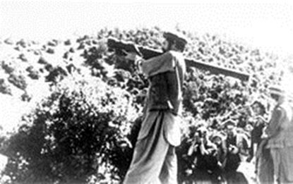
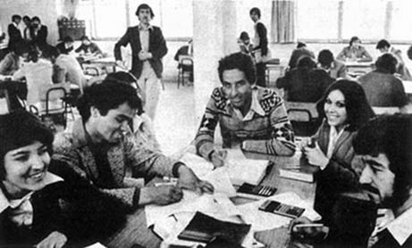
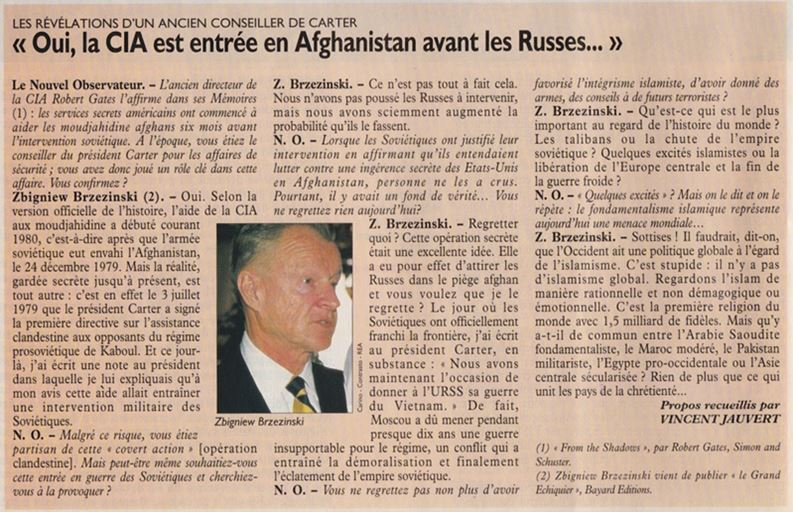
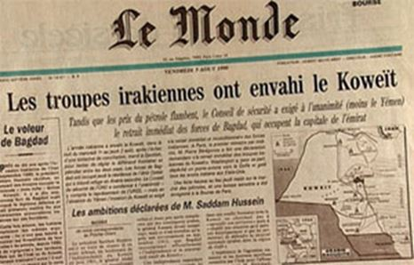
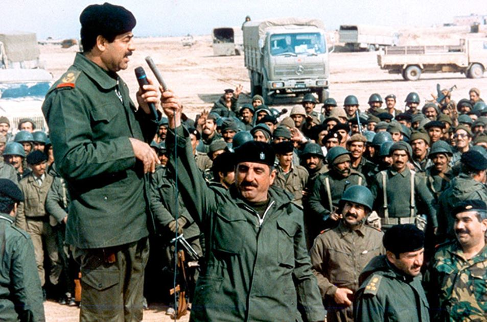
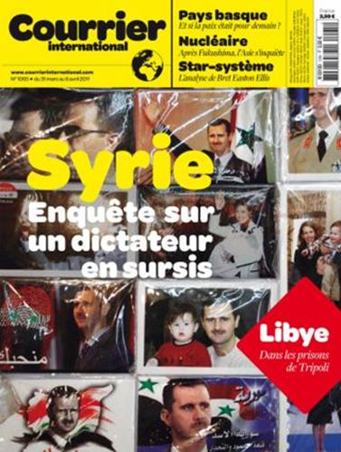
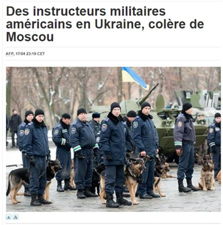
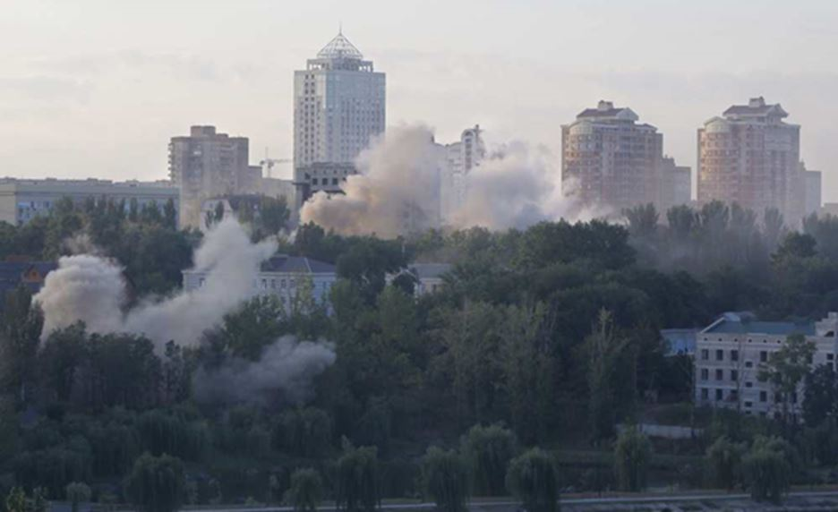
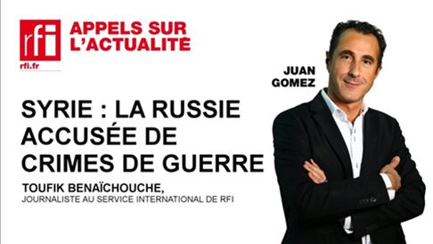
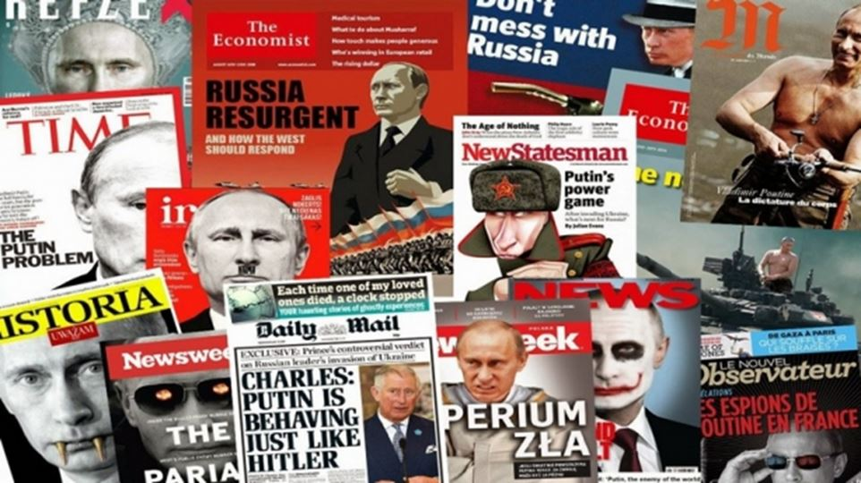

LES MÉDIAS OCCIDENTAUX VOUS ONT « INFORMÉ » QU'EN 1979, L'URSS AVAIT ENVAHI L'AFGHANISTAN
Dans la réalité, l'URSS était intervenue en collaboration auprès d'un pays allié (il n'y a jamais eu de guerre entre Moscou et Kaboul) au sein d'une déstabilisation moudjahidine orchestrée par le cabinet de Jimmy Carter (« Opération cyclone » de 1978). Le but était de renverser le pouvoir communiste de Kaboul et implanter une république islamiste partie tenante de la « muslim belt », la « ceinture musulmane » au sud de l'URSS dessinée par les Etats-Unis.
Quand on pense qu'à l'époque l’Afghanistan était un grand partenaire économique de l'URSS et qu'à Kaboul les femmes pouvaient librement se rendre aux Universités et au vu de ce que le pays est devenu, oui, les Américains ont fait un sacré boulot si l'on peut dire...
Mais, dans l'esprit populaire, c'est toujours la « méchante Armée rouge qui est intervenue contre les gentils moudjahidines »…
Et pourtant….
LES MÉDIAS OCCIDENTAUX VOUS ONT « INFORMÉ » QU'EN 1983, L'URSS AVAIT DÉLIBÉRÉMENT ET FROIDEMENT ABATTU UN AVION DE LIGNE CIVIL SUD-CORÉEN
Dans la réalité, l'avion avait gravement dévié de sa trajectoire, était profondément entré en territoire soviétique à une époque où les avions américains n'arrêtaient pas de tester leurs défenses radars. Plusieurs tentatives d'entrer en contact avec l'appareil ont échoué. De même, ont échoué les tentatives ultimes des chasseurs déployés sur zone et intimant l'ordre à l'appareil de dévier de sa route. Toutes ces procédures sont internationales et elles ont été respectées à la lettre. L'avion a effectivement été abattu alors qu'il avait déjà survolé les zones les plus sensibles du sud-est soviétique (bases aériennes et de radars). C'est terrifiant... mais ce n'est pas quelque chose qui a été fait « froidement »...
Dès le lendemain, le Kremlin a accusé Washington de s'être servi d'un appareil civil pour une mission d'espionnage de grande envergure... c'est exactement la même réflexion de la plupart des pilotes de ligne aujourd'hui.
Toujours en 1983, les médias occidentaux ne vous ont pas informés que suite à une opération de l'OTAN (Able Archer) venant en parallèle de l'avion sud-coréen abattu, nous étions passés très près d'un véritable apocalypse nucléaire... Le responsable du KGB à Londres de l'époque n'hésitant pas à soutenir que l'« affaire » du vol sud-coréen aurait justement pu être un prétexte à une opération militaire de plus grande envergure de l'OTAN à cette époque.
AU DÉBUT DES ANNÉES QUATRE-VINGT-DIX, LES MÉDIAS OCCIDENTAUX VOUS ONT « INFORMÉS » QUE LE "TRÈS MÉCHANT SADDAM HUSSEIN" AVAIT ENVAHI LE KOWEIT
Dans la réalité, on a juste oublié de vous dire que ce sont les Occidentaux qui avaient poussé l'Irak à une guerre terrible contre l'Iran et qu'au terme de celle-ci, le président irakien cherchait quelques appuis financiers pour redresser son pays. Alors que juste avant, Saddam Hussein était le grand allié, le grand « copain », même des présidents occidentaux, il fut purement et simplement lâché, oublié... « démerde-toi » en substance!
Il se tourna alors vers les pays arabes qui lui dirent qu'il avait mené une guerre occidentale qui ne les concernaient pas... Il décida alors de faire du Koweit l'ouverture maritime de l'Irak. Une bien mauvaise idée... mais quelle « information » de tout ceci de la presse occidentale ?
LES MÉDIAS OCCIDENTAUX VOUS ONT « INFORMÉS » QUE BACHAR AL-ASSAD ÉTAIT UN « BOUCHER À ABATTRE », UN AUTRE DICTATEUR... IL Y A BEAUCOUP DE DICTATEURS À ABATTRE POUR LES OCCIDENTAUX…
Dans la réalité, si nous souhaitons une Syrie laïque et multi-culturelle (chose qu'elle est déjà), le mieux serait de le laisser en place plutôt que de financer et d'armer des rebelles qui n'ont qu'un but, transformer le pays en république islamiste (Al-Nosra fait du bon boulot monsieur Fabius ?). On a certainement aussi oublié de vous informer que si Bachar al-Assad s'était couché devant un projet gazoduc qatari, il serait actuellement le plus grand allié de l'Occident et non pas l'homme à abattre ! Selon que vous serez pro ou anti-intérêts occidentaux, les jugements vous rendront allié ou dictateur !
LES MÉDIAS OCCIDENTAUX VOUS ONT RÉCEMMENT « INFORMÉS » QUE VLADIMIR POUTINE AVAIT ANNEXÉ LA CRIMÉE
Dans la réalité, personne ne vous a informé du fait que la Crimée est une terre russe rattachée malgré elle à un pays « nouveau », l'Ukraine, issu de la dislocation de l'URSS en 1991. Pas plus que cette Ukraine était autrefois en grande partie une terre russe... Pas plus que les Russes n'ont jamais annexé la Crimée au sens propre mais que ce sont ses habitants qui ont massivement voté leur indépendance (puis rattachement à leur mère-patrie russe). La raison ? Eviter de subir le même bain de sang que celui subi par les habitants du Donbass de la part de l'artillerie ukrainienne.
ENFIN, LES MÉDIAS OCCIDENTAUX VOUS ONT « INFORMÉS » QUE LA RUSSIE AVAIT DÉSTABILISÉ L'UKRAINE ET QUE C'ÉTAIT ELLE QUI MENAIT LA GUERRE AU DONBASS
Dans la réalité, l'Ukraine a été déstabilisée par une fausse révolution mais un vrai coup d'état orchestré par l'administration états-unienne (sous la mandature Obama / Clinton). Dans ce contexte, l'OTAN a ressorti de la naphtaline les tristes bataillons néo-nazis et les ont envoyé « faire la révolution » puis massacrer la population pro-russe du Donbass ! Des accords ont été signés à Minsk (accords de Minsk II) début 2015 prévoyant une réforme constitutionnelle visant à faire de l'Ukraine une fédération.
Ces accords sont tout simplement oubliés aujourd'hui et les dirigeants européens, plutôt que de faire pression sur Kiev et Porochenko pour que l'artillerie ukrainienne cesse ses massacres, ne font pression que sur Moscou et Poutine... qui n'a évidemment aucun moyen d'intervenir! Les gens du Donbass, eux, ne demandent que le respect de leurs origines ethniques et culturelles russophones ! Depuis 2013, il y a des milliers de morts à cause de l'armée ukrainienne encadrée par des généraux de l'OTAN !

Bombardements ukrainiens sur Donetsk
SI NOUS ÉCOUTONS LES MÉDIAS OCCIDENTAUX, C'EST LA PRESSE RUSSE QUI FERAIT DE LA PROPAGANDE ET DE LA DÉSINFORMATION EN FRANCE !
Dans la réalité, il y a une doxa officielle imposée et quiconque va à l'encontre de cette doxa tient des propos « controversés ». Explication de texte. Une controverse est un libre débat d'échange d'idées contradictoires au sein d'une démocratie. Le problème qu'avoir des propos « controversés » offre une vision péjorative, sous-entendu, qui va à l'encontre d'une « vérité vraie et établie ». Par conséquent, dans la république française libre et démocratique, quiconque va à l'encontre de la doxa officielle ne s'exprime pas au sein d'une libre controverse mais « émet des propos controversés »…
ALORS MAINTENANT, OU BIEN VOUS ENLEVEZ LA MERDE DE VOS YEUX ET DE VOS OREILLES ET VOUS RETOMBEZ DANS LE MONDE RÉEL, OU BIEN, POUSSÉS PAR VOTRE CRÉTINERIE PRIMAIRE, VOUS CONTINUEZ A ÉCOUTER FRANCE INFO (« and Co »)...!
Sachez juste une chose, il y a des gens dans le camp occidental qui poussent à la guerre depuis quelques années et, avant que l'irrémédiable ne se produise, il faut d'abord faire germer dans les masses populaires la désignation d'un « ennemi ». Le jour où les dirigeants jugent que les masses populaires sont suffisamment endoctrinées, alors tout est possible...
Aujourd'hui, c'est contre la Russie et contre Poutine que l'on s'emploie à endoctriner les masses populaires !
Partager cette page